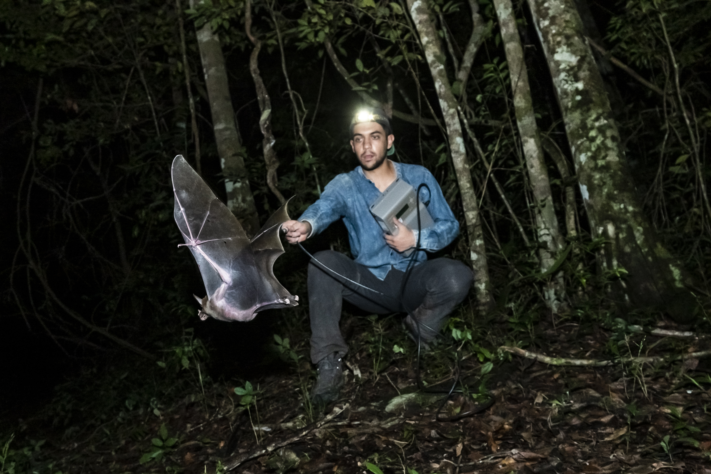

Ecología y conservación de murciélagos carnívoros en la Reserva de la Biosfera Calakmul, Campeche
Objetivos:
Profundizar en el conocimiento de la ecología de dos especies de murciélagos carnívoros, Vampyrum spectrum y Chrotopterus auritus, con enfoque en su dieta y movimientos.
Descripción del Proyecto
En el sureste del país, inmersos en la selva, entre árboles viejos y templos mayas, se encuentran dos de las especies de murciélagos más grandes de todo el continente americano: el falso vampiro (Vampyrum spectrum) y el falso vampiro lanudo (Chrotopterus auritus).
Estas dos especies son principalmente carnívoras, se alimentan de roedores, aves, pequeños reptiles y anfibios, e incluso cazan a otros murciélagos más pequeños. Aunque están ampliamente distribuidas a lo largo del neotrópico, sus poblaciones son poco densas y no son muy abundantes,
lo que las convierte en especies muy poco estudiadas. En este proyecto trabajamos para profundizar en el conocimiento de su ecología, biología e historia natural, principalmente a través de su dieta y sus movimientos por el espacio, dentro y en los alrededores de la Reserva de la Biosfera Calakmul.
Trabajo realizado por nuestros expertos

¿Dónde se hace?
Calakmul, Campeche, México.
¿Qué se hace?
#Falta descripción de lo que se hace en el laboratorio
Participantes
Alfredo Ortega González
Ángel Uriel Torres Alcantara
Javier Alejandro Torres Cervantes
Resultados
Esperamos entender a mayor profundidad la estrategia de caza de ambas especies, desde los tipos de presa que obtienen, hasta la forma en que la detectan e identifican. A demás, buscamos analizar la composición del microbioma de ambas especies, relacionada con su dieta y sus variaciones a lo largo del año.
Y por último, esperamos determinar cómo están usando el espacio tomando en cuenta las áreas perturbadas y los parches de bosque maduro, relacionándolo con el proceso de aprendizaje y primeros vuelos de forrajeo de las crías.